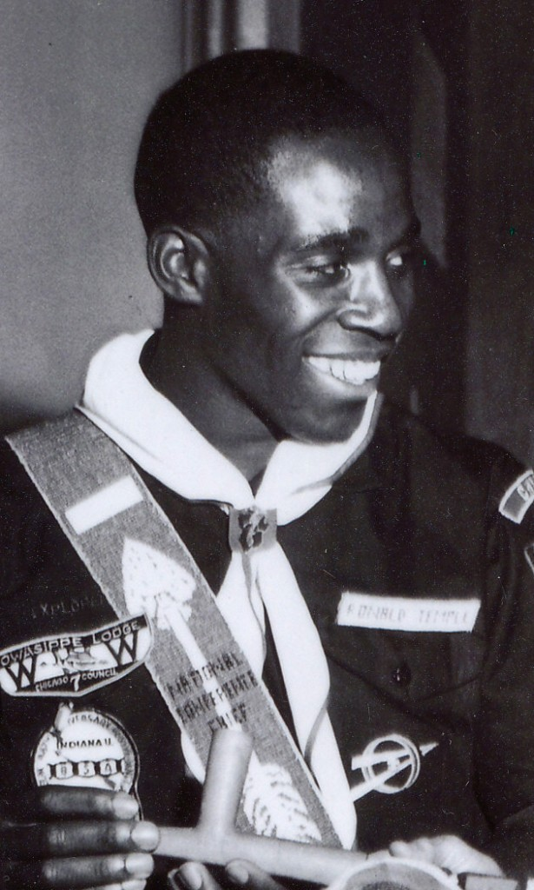

Ronald J. Temple was born on September 10, 1940 and has been a lifelong educator and Scouter. An African American, he grew up on Chicago's Westside and graduated from Marshall High School. Ron initially joined a small troop in his neighborhood, but due to their lack of activity, was recruited by Bob Sublette and Norville Carter to join Troop 534. Ron earned the Explorer Silver Award through Post #2534. As a youth, he worked at Owasippe Scout Camp for several summers during the late 1950's.
Ron became the Chief of Mon-da-min Chapter in 1958, then served as the Owasippe Lodge #7 Chief 1959 and 1960. He received the Vigil Honor on 07/14/1960, bestowed with the name "Elachtoniket" – The Seeker. At the 1960 National O/A Planning Meeting, Ron was elected by his peers to serve as National Conference Chief for the 1961 NOAC at Indiana University. It is the first and only time an African-American Arrowman has been chosen to lead the Order as Chief.